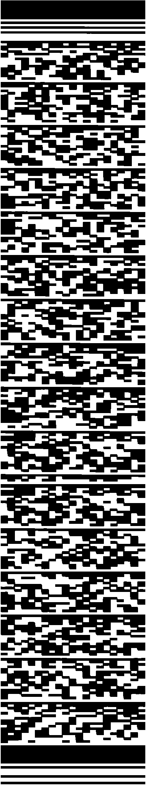

Share Follow Me 📤

Adjust UI and Cards above until 5 numbers fit neatly on one row
Pulls the most common colors out of any picture and sorts them into the 5 slots below automatically - fine-tune anything after.

If this app helps you win, consider sending a tip!
Fully independent of your real settings - starting a test here never changes what's on/off for actual gameplay, and stops itself when you leave the tab.
Sets the order header buttons appear in, left to right. Only affects order, not which ones show - that's still controlled by each button's own toggle in General.
Sets the order toggles appear in on the General tab, and can hide ones you never use - a hidden toggle's setting stays exactly as it was, it just won't be adjustable here until shown again.
Touch
Hand
Voice
Tone Cadence
Voices marked ⭐ are natural/enhanced voices your device offers - much less robotic than the plain default.
Export your full settings (including custom presets) as a backup code before resetting, or paste one back in to restore it.
Pick a preset, copy its code below, then paste it into the backup code box above and tap Import.
This app is a memory assistant built to help you track complex sequence games and pattern challenges. It remembers the inputs so you don't have to.
The very first screen you see has "UI" and "Cards" +/- buttons with a live sample sequence underneath. Adjust both until the sample numbers fit neatly on one row - most people find 5 fits best. Since every device and screen is different, this is worth doing once up front rather than guessing through Settings later.
Like any app in a browser tab, a phone call, notification, or accidental back-swipe can knock you out of a round mid-sequence. Two device-level settings help:
Pin the app (Android): Open Recent Apps, find Follow Me, tap its icon at the top of the card, then choose "Pin". This locks the screen to just this app until you unpin it (usually back + overview, held together) - notifications can still show, but taps and swipes can't accidentally leave the app or open anything else.
Turn on Do Not Disturb: Swipe down from the top for Quick Settings and tap Do Not Disturb, or find it under Settings → Sound. This silences calls and notifications for as long as you leave it on.
Every hand-pose mapping now has an Any / Left / Right selector next to it (Settings → Mapping → Hand tab). Leave it on Any to trigger with either hand, or set Left and Right differently so the same pose does two different things depending on which hand you use. If detection reads the wrong hand on your device, flip "Swap Left/Right Hands" in Settings → General.
Settings → Advanced → Backup / Restore lets you export your entire configuration (including custom presets and profiles) as a short text code, and paste one back in to restore it - handy before resetting, switching devices, or just keeping a safety copy.
Settings → Advanced → Settings Presets, right below Backup / Restore, has a dropdown of ready-made configurations. Pick one, tap Copy, then paste that code into the Backup / Restore box above it and tap Import to apply it.
The welcome screen (and the lock icon inside Settings) both toggle the same Settings Lock - turn it on to stop someone else from changing your setup mid-game. Either one unlocks it again just as easily.
Every toggle, slider, and switch in the Settings menu explained.
Profiles: Save and load your entire configuration instantly.
Input: Choose your layout.
• 9-Key: Standard 3x3 grid.
• 12-Key: 3x4 grid for advanced setups.
• Piano: 7 natural keys, 5 sharp/flat keys.
Mode:
• Simon Says: Cumulative sequence. Adds one item per round, playing from the start.
• Unique: Random sequences. Clears completely each round.
Machines: Track up to 4 completely independent sequences simultaneously.
Length: Maximum sequence boundary per machine.
Auto-Advance (Unique): Automatically clears the sequence for the next round after playback finishes.
Practice Mode 🎓: A real Simon-Says style test using your current settings - plays a random round, waits for you to repeat it back (through any input method, including Tone Cadence), then grows the sequence by one and replays it from the start. Says "Correct" and advances, or "Wrong" and replays the same round again.
Autoplay: Automatically triggers playback the moment a sequence round is completed.
Flash 👀: Visually highlights the number bubble during playback.
Audio 👂: Reads the sequence aloud using the selected Voice Settings.
Morse ✋: Triggers physical haptic vibrations mapped to dot/dash patterns for silent feedback.
Speed: Multiplier for how fast the sequence is delivered.
Pause: Injects a small or large delay between numbers.
Chunk Size & Delay: Breaks long sequences into groups (e.g., 3 numbers at a time) with a forced breath/delay between chunks.
Theme 🎨: Pick a color scheme or open the Editor to create your own.
Sequence Size: Scales the individual cards showing the remembered numbers, from 50% up to 300%.
UI Scale: Zooms the entire interface in or out.
Header Size: Independent scale for just the header's icon row, on top of UI Scale.
Font Size: Independent scale for the keypad's number/control buttons and the Settings menu's text, on top of UI Scale.
Number Size: Adjusts the font size of the text inside the sequence cards.
Header Padding: Extra space between the header and the sequence cards below it, on top of the small built-in gap that always keeps them from touching.
Inputs Padding: Extra space at the bottom of the keypad, in case your device's own navigation bar sits close enough to cover part of it.
AR Playback Speed: The speed at which your recorded AR background clips play back.
Resize Gesture: Maps the pinch-to-zoom gesture to scale the Global UI, the Sequence Cards, or disables it.
Voice Trigger: The specific word the app listens for before logging your spoken numbers or a command (e.g., "Set 1 2 3" or "Set Play").
Touch / Hand tabs: Switch between mapping touchscreen gestures and camera hand gestures to each key.
9-Key / 12-Key / Piano accordions: Each tab has one accordion per layout. Open one to see that layout's Quick Preset picker plus every key's individual dropdown.
Quick Presets ⚡: Bulk-assigns every key in that specific layout at once (e.g. "Finger Counts" for hand, "Taps" for touch) - individual keys can still be fine-tuned afterward. Every key is pre-assigned a sensible default the first time you open this tab.
Key Mappings: Assign a specific touch-screen gesture or hand gesture to each individual keypad value.
Tap Speed, Swipe Distance, and the gesture category filters moved to 🛠️ Advanced below.
Opens as its own tab in Settings, alongside Game/General/Mapping. Holds the more technical, fine-tuning controls:
Test & Practice 🎯: One-tap tests for the Hand, Touch, Voice, and Tone engines - fully independent of your real settings, so trying one never affects actual gameplay.
Header 🔀: Sets the left-to-right order of header buttons using ▲/▼ next to each one. Only reorders - whether a button shows at all is still its own toggle in General.
General Toggle Order 🔀: Sets the order every toggle appears in on the General tab, and can hide ones you never touch using the 👁️/🚫 button - a hidden toggle's setting stays exactly as it was, it's just not shown until you un-hide it here.
Voice Settings 🗣️: Text-to-speech voice, Pitch/Speed/Volume, and saved voice profiles - moved here from General.
Sensitivity 🎛️: Every timing/distance threshold the Touch, Hand, Voice, and Tone Cadence engines use, grouped by input method - each slider explains itself underneath. "Restore Defaults" resets all of them at once (locks out while sliders are locked).
Populate Hand/Touch Gesture Menus: Two separate filter groups. Hand controls which pose/motion categories (Static Poses, Pinches, Finger Counts, Combos, Advanced Vision Shapes, Directional Swipes, Motion Transitions) show up in the Hand tab's dropdowns; Touch controls which touch categories (Taps, Swipes, Boomerangs, Chords, etc.) show up in the Touch tab's dropdowns.
Haptic Output Mapping: Customize the dot/dash vibration pattern for each of the 12 possible values, used when the Playback section's Morse toggle is on.
Backup / Restore 💾: Export your entire configuration (including custom presets and profiles) as a short text code, and paste one back in to restore it.
Settings Presets 🎯: A dropdown of ready-made configurations, right below Backup / Restore. Pick one and tap Copy, then paste the code into the Backup / Restore box above and tap Import to actually apply it - the preset box itself only ever shows you the code, it doesn't apply anything on its own.
Control the app without touching the screen. Turn on "Hand Gestures" in Settings → General, then click the 🖐️ icon in the header to activate the camera.
🎛️ Per-Key Mapping (customizable):
Each keypad value can be assigned its own hand pose or motion - Settings → Mapping → Hand tab → open the 9-Key/12-Key/Piano accordion for your layout. Apply a Quick Preset (like "Finger Counts") to assign every key at once, or set individual keys by hand. Which of the 7 categories below show up in those dropdowns is controlled in 🛠️ Advanced.
Next to each pose is a hand selector (✋ Any / 👈 Left / 👉 Right). Leave it on Any to trigger with either hand, or pick Left/Right to make the same pose do different things depending on which hand you use - e.g. a left-hand fist for one key and a right-hand fist for another. If the detected hand comes out backwards on your device, flip "Swap Left/Right Hands 🔄" in Settings → General (the Hand test in Advanced shows which hand is being detected).
🪃 Motion Shapes & Directional Swipes
Unlike poses, these read your hand's movement through space rather than its shape - any hand shape works as long as you move it clearly. A brief, deliberate motion won't register; give it a real, unhurried movement.
👆👇👈👉 Swipe Up / Down / Left / Right: Move your hand clearly in one direction.
🪃 Boomerang Pattern: Move out, then back to roughly where you started.
⚡ Zigzag Motion: Move back and forth three or more times, like scrubbing.
🔄 Circular Sweep: Trace most of a full circle, either direction.
⚓ Anchor Hold: Hold your hand still in one spot for about half a second.
Left/Right depends on your camera's mirroring, same as hand-side detection above - "Swap Left/Right Hands" corrects both together. Sensitivity (how far the hand must move to count) is adjustable in Settings → Advanced → Sensitivity → Hand.
✋ Hand Signals (global, separate from key mapping, both hands):
Each one needs both hands showing the same pose at the same time - this keeps them distinct from your regular one-handed per-key mapping above, so a single hand doing the same pose while you play never accidentally triggers one. Turn on "Hand Signals" in Settings → General to enable them - it requires Hand Gestures to also be on.
💡 Tracking Rules:
These touch commands work on the transparent "Gesture Pad" (opened via the 🗒️ icon) or when Boss Mode Gestures are enabled. Assign any of them to a keypad value in Settings → Mapping → Touch tab; a Quick Preset can assign a whole layout at once. There are 100+ individually-named gestures across 7 categories - too many to list one by one, so this explains how the names are built, plus real examples from each category.
Most names follow shape_direction_winding_fingers, left to right, dropping any piece that doesn't apply:
any to match every direction with one mapping.cw/ccw, only on shapes that turn (switchback, corner, triangle, u_shape, square)._2f / _3f suffix for 2 or 3 fingers at once; no suffix means 1 finger.Example: switchback_up_cw = a switchback, starting upward, curving clockwise, one finger. Picking the _any version of a shape matches every direction/winding at once.
Taps: tap, double_tap, triple_tap, long_tap (press and hold).
Multi-Finger Taps: the same 4, at once with 2 or 3 fingers, aligned vertically/horizontally/diagonally - e.g. double_tap_2f_horizontal.
Spatial Taps: a double or triple tap where each tap lands somewhere different on screen instead of the same spot. Two taps read as a direction (Double_tap_spatial_up); three taps read as a line, corner, or boomerang shape depending on the angle between them.
Swipe: one clean motion in a direction, 1 finger.
Long Swipe: the same, but covering extra distance - a separate, longer-throw version of the same 8 directions.
Flick: a swipe completed fast (under ~200ms) - a quick snap rather than a deliberate drag.
Multi-Finger Swipes: the same swipe, with 2 or 3 fingers moving together.
Boomerang: out then back (I-shape) - e.g. swipe up, then down, without lifting.
Switchback: out then a sharp-but-not-full reversal (like a ">" shape).
Corner: a right-angle-ish turn (L-shape).
Zigzag / Long Zigzag: 3-4 segments that alternate turn direction (left-right-left...).
Triangle / U-Shape / Square: 3-4 segment shapes that curve the same way throughout; Triangle and Square close back near the start, U-Shape doesn't.
Corner/Triangle/U-Shape/Square all carry a winding (cw/ccw) since they turn; Boomerang and Zigzag don't.
Chord: 2 fingers land together and move independently in different directions - e.g. one goes up while the other goes left. Named alphabetically: chord_left_up_2f.
Anchor: one finger touches down first and stays still (a modifier, like holding Shift) while a second finger taps or swipes - anchor_tap_2f, anchor_swipe_up_2f, etc.
Pinch Swipe / Expand Swipe: 2 fingers swiping together in the same direction while also drawing closer together (pinch) or further apart (expand) as they move.
Any Swipe, Boomerang, Switchback, or Corner performed with a deliberate ~half-second hold partway through, instead of one continuous motion - e.g. swipe up, pause, continue. 1-finger only. Same direction/winding suffixes as the shapes above (Pausing_Switchback_up_cw).
A tap that's immediately followed by a swipe, boomerang, or corner without lifting between the two - reads as a distinct combo, separate from just doing the shape on its own. 1-finger only.
These aren't in the mapping dropdowns - each has its own on/off toggle in Settings → General instead, listed in the Settings tab above.
Twist: rotate 2 or 3 fingers like turning a dial - 3 fingers adjusts Volume, 2 fingers adjusts Speed (both also have header ± buttons and voice commands - see Buttons and Voice tabs).
Pinch/Resize: standard pinch-to-zoom, mapped to scaling the UI or the sequence cards.
Squiggle: rapid back-and-forth scrubbing - 1 finger erases, 2 fingers clears the round.
Turn on "Voice Input" in Settings → General, then tap the 🎤 header icon to start listening. Say your Voice Trigger word (default "Set"), then a number, letter, or command in the same breath.
Examples: "Set 1 2 3" enters those values. "Set Play" plays back. Requires "Voice Commands" also on in Settings → General.
Commands: play / start / go • stop / pause • clear / reset • delete / backspace / undo / back • settings / options • louder • quieter • faster • slower
Volume/speed commands are single words (not "volume up") to match how the recognizer listens for one word right after your trigger.
Copy this prompt into an AI Audio Assistant (like ChatGPT Voice) to play with a dynamic AI caller that adapts to your current configuration.
Hum or whistle to play a real Simon-Says memory game, hands and eyes free. Turn on "Tone Cadence Mode" in Settings → General plus "Practice Mode" in Settings → Game, then tap the 🎵 header icon to start. 9-Key layout only for now - switching to 12-Key or Piano turns it off.
🎼 How a round plays out:
Once, at the very start of a session, you'll hear 8 tones - a quick "get ready" cue. Then each round plays the sequence so far once, plays it again immediately as your cue to answer, and starts listening. Hum it back correctly and the sequence grows by one note and replays from the start; get it wrong and the same round repeats. This continues up to 20 notes, exactly like Simon Says.
⏱️ Timing (this is the part that trips people up):
The app's own playback is a rigid 0.2 seconds of tone followed by 0.8 seconds of silence per note. Your hummed-back answer doesn't need to match that rigidly - the listening side is intentionally more forgiving, since nobody hums with machine timing. Aim for a short, clear chirp with a real pause after it, and don't rush; a snappier chirp-pause-chirp rhythm reads more reliably than one smooth continuous melody.
💡 Tips:
Send Feedback 💬